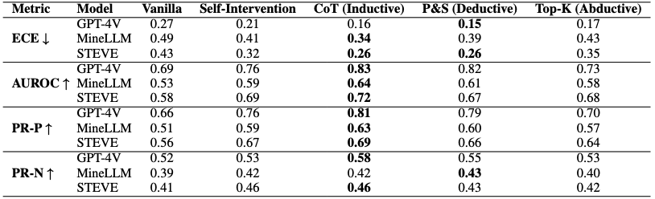
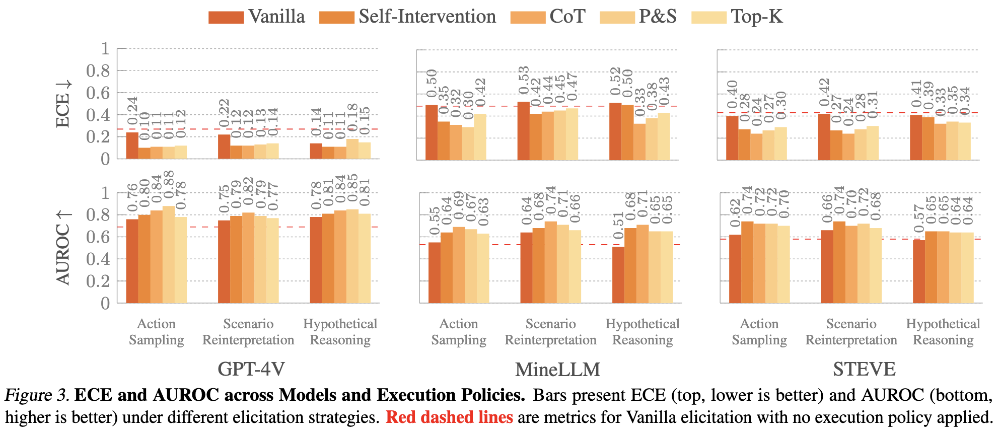

Uncertainty in Action: Confidence Elicitation in Embodied Agents

Abstract
Expressing confidence is crucial for embodied agents as they navigate dynamic, multimodal environments where uncertainty arises from both perception and decision-making processes. To the best of our knowledge, this is the first work investigating open-world embodied confidence elicitation focusing on settings where agents, powered by large language models and vision-language models, lack direct access to their internal reasoning processes. We introduce Elicitation Policies designed to address inductive, deductive, and abductive uncertainties, along with Execution Policies for scenario reinterpretation, action sampling, and hypothetical reasoning. Evaluating agents on calibration and failure prediction tasks in the Minecraft environment, we show that structured reasoning approaches, such as Chain-of-Thoughts, improve confidence calibration performance. However, our findings also reveal persistent challenges in distinguishing uncertainty, particularly under abductive settings, highlighting the need for more sophisticated embodied confidence elicitation methods.
Embodied Confidence Elicitation

Embodied Confidence Elicitation. Elicitation Policies enable agents to express uncertainty, while Execution Policies refine and expand confidence assessment through scenario reinterpretation, action sampling, and hypothetical reasoning. Together, they enhance confidence calibration in embodied agents. The orange text represents the vanilla elicitation policy, which incorporates the vanilla confidence prompt into the original instruction. The brown arrows denote the Scenario-Reinterpretation execution policy, prompting the agent to generate additional scene insights.
Results

Confidence Metrics Across Elicitation Policies with three models (GPT-4V, MineLLM, and LLaMA-based STEVE) using different elicitation strategies: Vanilla (basic task understanding), Self-Intervention (reflection on own actions), Chain-of-Thought (step-by-step reasoning), Plan & Solve (explicit planning before execution), and Top-K (confidence distribution across multiple outputs) with No Execution Policies applied. The best performance across each model is in bold, and second best is underlined.

ECE and AUROC across Models and Execution Policies. Bars present ECE (top, lower is better) and AUROC (bottom, higher is better) under different elicitation strategies. Red dashed lines are metrics for Vanilla elicitation with no execution policy applied.
BibTeX
@article{yu2025uncertaintyactionconfidenceelicitation,
title={Uncertainty in Action: Confidence Elicitation in Embodied Agents},
author={Tianjiao Yu and Vedant Shah and Muntasir Wahed and Kiet A. Nguyen and Adheesh Juvekar and Tal August and Ismini Lourentzou},
journal={arXiv preprint arXiv:2503.10628},
year={2025}
}